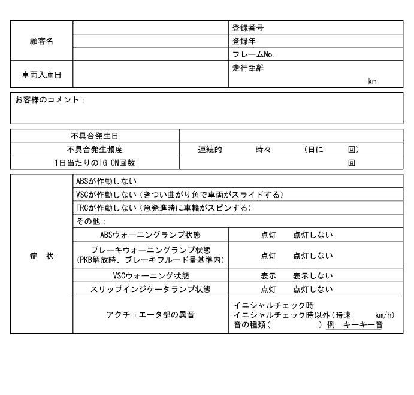

ABS with EBD & TRC & VSC & BA System Customer Problem Analysis Check Sheet |

| ABS/VSC System | Output Code |
|---|---|
| First Time | |
| Time 2 | |
| Time | |
| Malfunction DTCs Other than ABS/VSC System |
| Item Name (TaSCAN Display) | Recorded Value | Unit |
|---|---|---|
| Steering Angle Sensor | ° | |
| Operating System | None / ABS / VSC / TRC / BA / Hill-start Assist / Prohibited | - |
| Maintenance Mode | Normal / Maintenance Mode | - |
| Stop Switch | ON / OFF | - |
| Parking Brake | ON / OFF | - |
| Buzzer | ON / OFF | - |
| Shift Lever Position | P, N / R / D/M / Unknown | - |
| Gear Position | P, N / R / Lo / 2 speed / 3 speed / 4 speed / 5 speed / 6 speed / Unknown | - |
| Speed Sensor FR | km/h | |
| Speed Sensor FL | km/h | |
| Speed Sensor RR | km/h | |
| Speed Sensor RL | km/h | |
| Vehicle Speed | km/h | |
| Vehicle Speed Change Amount | m/s2
| |
| Forward and Rearward G | m/s2
| |
| Lateral G | m/s2
| |
| Yaw Rate Sensor | °/s | |
| Master Pressure Sensor | V | |
| Master Pressure Sensor Change Amount | MPa/s | |
| Actual Output Torque | Nm | |
| Accelerator Opening Rate | % | |
| Number of IG ON Times Since Freeze | - | |
| Elapsed Time Since Freeze | msec |
Freeze Frame Data When Malfunction DTC Occurs
If freeze frame data from when a malfunction DTC occurred is stored, "F" is displayed for the relevant DTC on the DTC display screen.
Freeze Frame Data During System Operation
Freeze frame data during system operation is updated with new data each time the system operates.
The number of times the IG has been turned OFF → ON since the system last operated is stored and displayed up to 31 times.
Using the number of IG ON times since the data freeze, you can check whether the displayed data is from when the malfunction pointed out by the customer occurred, using the following formula as a guide. ("Number of IG ON times per 1 day" × "Number of days since the malfunction occurred" = "Number of IG ON times since data freeze")